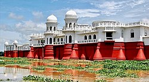
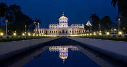
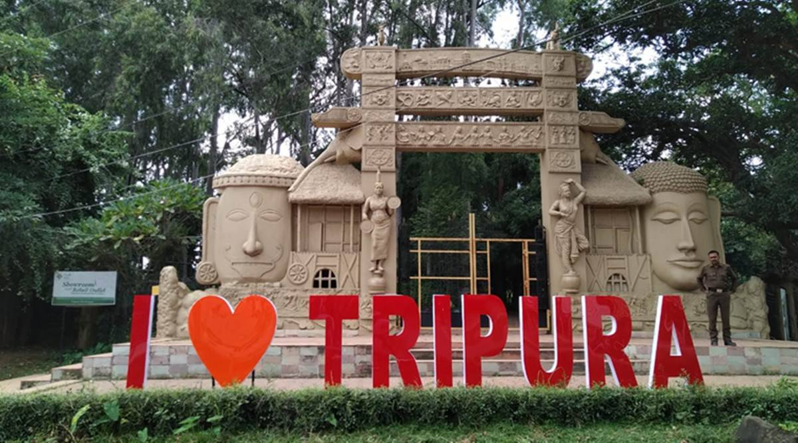
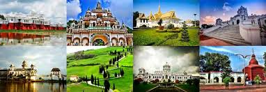

Tripura is a hilly state in northeast India, bordered on 3 sides by Bangladesh, and home to a diverse mix of tribal cultures and religious groups. In the capital Agartala, the imposing Ujjayanta Palace is set among Mughal gardens, and Gedu Mia’s Mosque has white marble domes and towers. South of the city, Neermahal summer palace sits in the middle of Lake Rudrasagar and blends Hindu and Islamic architectural styles.
   for more information check out this site
Or you can watch this video